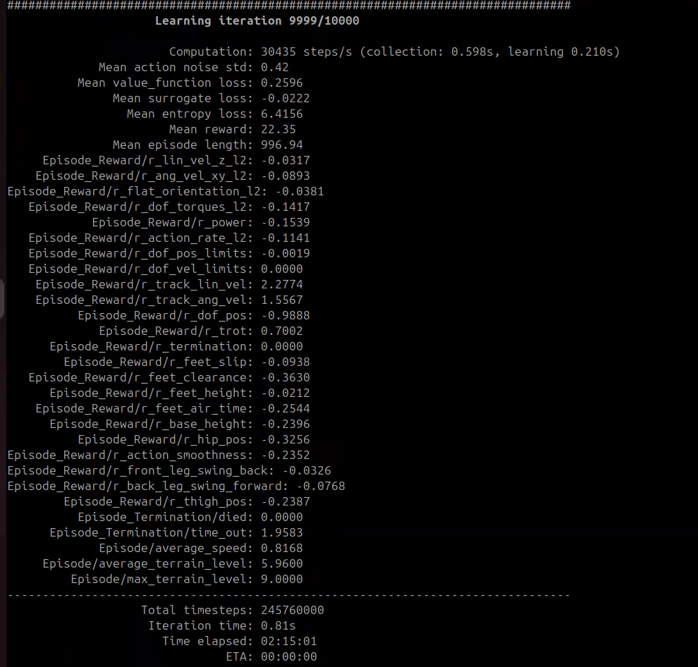
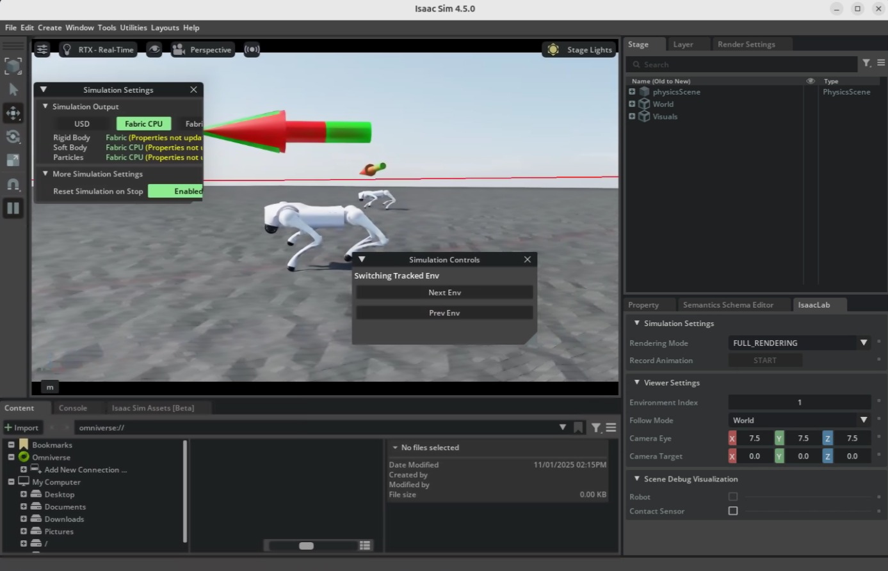
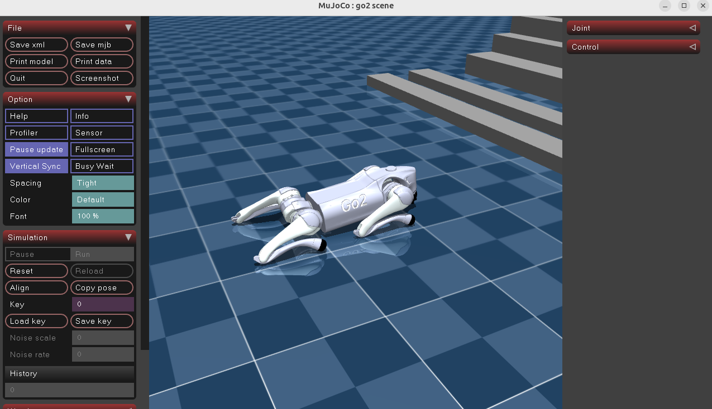

IsaacLab¶
Code is available here.
Installation¶
First create a new conda environment:
Install PyTorch:
Install IsaacSim 4.5.0:
pip install --upgrade pip
pip install 'isaacsim[all,extscache]==4.5.0' --extra-index-url https://pypi.nvidia.com
Install IsaacLab and others inside the cloned folder:
Training and Playing¶
Training output would be something like this:

For the first time, it may take some time to build the shaders.

Export ONNX Model¶
After being played, the ONNX model of the policy will be exported, which is needed for deployment.
Inside logs/rsl_rl/asig_sim2real/policy_1/exported you can find the policy.onnx exported just now. Copy this file to the deployment folder:
Sim-to-Sim Deployment with MuJoCo¶
Build deployment code¶
Now we have the ONNX model, we can build the deployment code.
First install dependencies:
-
Install ROS2 Humble following this guide
-
Install unitree_sdk2
-
Install other dependencies
-
Install onnxruntime
-
Go to the release page and download prebuilt binaries. Please download this file (tested): onnxruntime-linux-x64-gpu-1.22.0.tgz
-
Extract the folder and copy the “include” folder to “/usr/local”.
-
Copy the “lib” folder as “/usr/local/lib64”.
-
Copy the “lib/cmake” folder to “/usr/local/lib”.
-
Add “/usr/local/lib64” to your “LD_LIBRARY_PATH”:
-
-
Download TensorRT 10.9 GA from here and extract to a separate folder. You should download this one: TensorRT 10.9 GA for Linux x86_64 and CUDA 12.0 to 12.8 TAR Package. Then Add “lib” folder of extracted TensorRT to your “LD_LIBRARY_PATH”:
-
Install cuda-12.8 and cudnn-9 and add to LD_LIBRARY_PATH
Install cuda-12.8 follow this.
Install cudnn-9 follow this.
Then:
Now the dependencies should be fine, go back to the asig_sim2real folder and build the deployment code:
Deploy in MuJoCo.¶
Follow this link to install unitree_mujoco to a separate folder. If you install c++ version, follow official guidance to install mujoco.
Make sure you install MuJoCo 3.2.7 using:
Notes: You need to clone unitree_mujoco to local After installation following official guidance, open unitree_mujoco/simulate_python/config.py, set USE_JOYSTICK = 0. In MuJoCo it should look like this:

After installation, launch the unitree_mujoco simulator (both Python and C++ version work) in unitree_mujoco folder
# this is for c++ version
cd unitree_mujoco/simulate/build
./unitree_mujoco # assuming you have build output here
# this is for python version
cd unitree_mujoco/simulate_python
python3 ./unitree_mujoco.py
Finally, start the control nodes in asig_sim2real/deployment folder (If you encounter errors, try to deactivate the conda environment):
# terminal 1: deploy onnx model
./locomotion_node --net lo --policy loco_policy # or loco_policy (the pretrained policy)
# terminal 2: keyboard control
python terminal_control.py
Deployment on Real Robot¶
Flash Jetson Orin AGX¶
First we need to flash Nvidia Jetson Orin AGX and install SDK packages like cuda, cudnn, tensorrt and so on. Check the deployment docuement for details on flashing the system and installing components.
Install Dependencies¶
Log into Jetson AGX Orin ubuntu system and check whether required packages are installed correctly:
nvcc –version
ls -l /usr/local/cuda
ls /usr/lib/aarch64-linux-gnu/libcudnn*
ls /usr/lib/aarch64-linux-gnu/libnvinfer*
Install ROS2 humble.
Install unitree sdk2.
Install unitree sdk2 python follow their official guide. When following the last code block of FAQ-1, change the commands to:
#use the following commands instead of those given in repository
cd ~/unitree_sdk2_python
export CYCLONEDDS_HOME=/home/usrname/cyclonedds/install
# if this doesn't work, try this one
export CYCLONEDDS_HOME=$HOME/cyclonedds/install
pip3 install -e . --no-build-isolation
Install required packages for the deployment code:
Install onnxruntime, compile procedures are based on official manuscript.
- Onnxruntime v1.23.2: install from source
- Install cmake 3.28.5, find files in https://cmake.org/files/v3.28/.
Choose
cmake-3.28.5-linux-aarch64.sh. - Go to cloned
onnxruntimeproject. Make sure you set onnxruntime_BUILD_UNIT_TESTS=OFF , more details in github../build.sh --config Release --update --build --parallel --use_tensorrt --cuda_home /usr/local/cuda --cudnn_home /usr/lib/aarch64-linux-gnu --tensorrt_home /usr/lib/aarch64-linux-gnu --skip_tests --cmake_extra_defines 'CMAKE_CUDA_ARCHITECTURES=native''onnxruntime_BUILD_UNIT_TESTS=OFF' --build_shared_lib cd build/Linux/Release sudo make install cd /usr/local/lib/cmake/onnxruntime sudo vim ./onnxruntimeTargets-release.cmake # change all "lib64" to "lib" and save
Build Deployment Code¶
# before run this, make sure you source livox_driver, mocap and unitree driver first
cd ~/asig_sim2real/deployment
./run_build.sh
# if you encounter onnxruntime error again, run this:
sudo cp -r /usr/local/include/onnxruntime /usr/local/include/
Deploy and Control¶
Make sure your Jetson is in the same subnet as your PC. For example, Jetson IP can be 192.168.20.1, and the IP of your PC can be 192.168.20.2. On both computers, set the network IPv4 to be manual, and the network mask should be 255.255.255.0. After this, you should be able to communicate with ROS2 on both computers. Then, similarly to the Sim-to-Sim deployment, run the control script on your PC, and run the deployment code on Jetson:
# on your pc
python terminal_control.py
# on jetson
export NET_INTERFACE=network # network interface name on jetson connecting to the robot (e.g., eno1)
./locomotion_node --net <network interface> --policy loco_policy # or loco_policy
DISCLAIMER¶
WARNING — REAL ROBOT DEPLOYMENT
Always validate your controller in MuJoCo simulation before deploying to hardware. This document is provided as-is, for reference only, with no guarantee of correctness or safety.
Real robots can move suddenly and with significant force. Hardware and software setups vary, and behavior that works in simulation may fail on hardware. Before running anything:
- Keep an emergency stop within reach at all times
- Clear the workspace of people and obstacles
- Start with reduced torque/velocity limits
- Never assume the robot will behave as expected
You are solely responsible for ensuring the safety of people and equipment when using this document and the accompanying code.